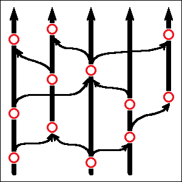

Folk songs can borrow tunes from other songs. Scientific theories do this routinely. Great discoveries are often made by combining ideas from remote and loosely related scientific disciplines. Human brains are highly capable of merging information from different sources, but even more importantly humans have language, which makes it possible to transfer essential pieces of this information from one human mind into another. Combination works, because it allows every individual part of a complicated theory to be improved independently, in parallel. Biological analogy to such a mixing of ideas is sexual reproduction. An organism’s genome is essentially an algorithm, and sexual reproduction allows to freely mix its individual parts with each other.
The tree-like picture drawn in the previous chapter is not exactly correct. Even bacteria will engage quite often in so-called “horizontal gene transfer”, which allows certain parts of their genetic information to be copied directly from one living organism into another, rather than from a parent to a child. This can happen with the help of a lot of different factors, including viruses. But on the other hand, folk songs can benefit from such horizontal transfer too. A typical human composer (or a performer of a folk song) will happily produce a long list of previously existing works of art which have greatly influenced their own approach to songwriting. And even though such “inspirations” will rarely be exact quotes, they nevertheless allow different songs to influence each other, and to incorporate traits from other, totally unrelated works of art.
This situation is even more true for scientific theories. A scientific work that doesn’t quote other papers is not considered a valid scientific work. Quite often, all the major components for a discovery may actually be already there, the only remaining part would be to find a way to combine them in an appropriate way. Einstein’s special relativity theory was basically a combination of previously existing Lorenz transformation formulas, known from the theory of electromagnetism, with Galilean principle of relativity, to give an example. Whereas his later general relativity theory, which provided us with a novel explanation of Newtonian laws of gravitation, was a combination of classical theoretical mechanics with Riemann’s non-Euclidean geometry.
When we add such “horizontal” connections to our tree-like picture from the previous chapter, it starts to look more like a mesh. Each node can now have not only multiple children, but also multiple parents, possibly even more than two. Once again, each node in this picture would indicate a different version of a particular scientific theory. Branches protruding from the node would point to other theories influenced by it, whereas branches coming in would indicate the creative process itself — the act of a certain scientist (or a group of scientists) coming up with a new theory by borrowing a bunch of ideas from the ocean of existing human knowledge and combining these ideas in an unexpected way.

Borrowing and mixing of ideas is efficient, because it allows all the constituent ideas to exist independently of each other, and in this way be polished to perfection in their own decentralized processes of creative improvement. This also means that all such constituent optimization processes — the ones which prepare building blocks for our more complex theories — can be performed by different people in parallel, which saves a lot of time. And even more importantly, optimizing a single part of a mechanism is always much easier than doing so for the entire mechanism as a whole. Which basically allows us to construct extremely complicated mechanisms and scientific theories from smaller parts, by only focusing on one small change at a time.
Speaking of scientific creativity, we humans are also lucky that we have language. Language will not make an invention for you, but it allows to transfer existing ideas between different human minds. Without this flow of information, all parts of the mechanism to be invented would have to be invented by the same person. Which isn’t something which even the smartest among us would be able to do. Language is also the main reason why human culture is so much richer than the animal one. Bird songs (along with other forms of animal culture) can indeed be transferred from one animal brain into another, but in animals this transfer is mostly limited to imitating an observed behavior. Language, on the other hand, allows us to do more than that. Unlike animals, we humans can also share personal experiences, events from our past and things we’ve learned about other humans or the laws of nature. And in this way, language, even spoken one, allows ideas to travel much farther and faster than imitation of behavior alone has ever been able to.
Horizontal transfer of ideas is powerful. It’s so powerful indeed, that even biological life has invented it. We have already seen this happening in bacteria, but “higher” forms of life employ such information sharing on a massive scale too. The name of this phenomenon is of course sexual reproduction. If we compared a biological organism to a mechanism, then its DNA code would be the algorithm for constructing this mechanism and operating it in a variety of environments. It’s a complicated algorithm, and it would have been very difficult to invent it from scratch. And so what biological life is doing, it splits this algorithm into smaller parts, which we all know as “genes”. Each of these parts can exist in many different versions and in many different places simultaneously, and in this way it can evolve independently of any other parts, in parallel. And these individual parts can also mix, so that the resulting organism becomes, after a large number of generations and a lot of trial and error, a combination of somewhat better functioning individual parts available out there.